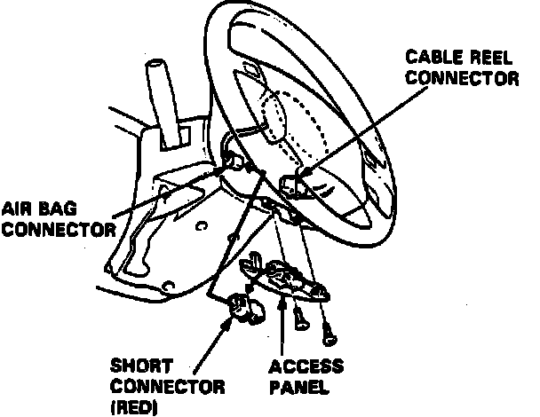
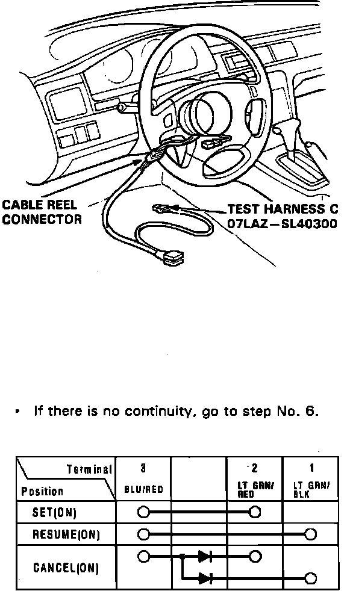
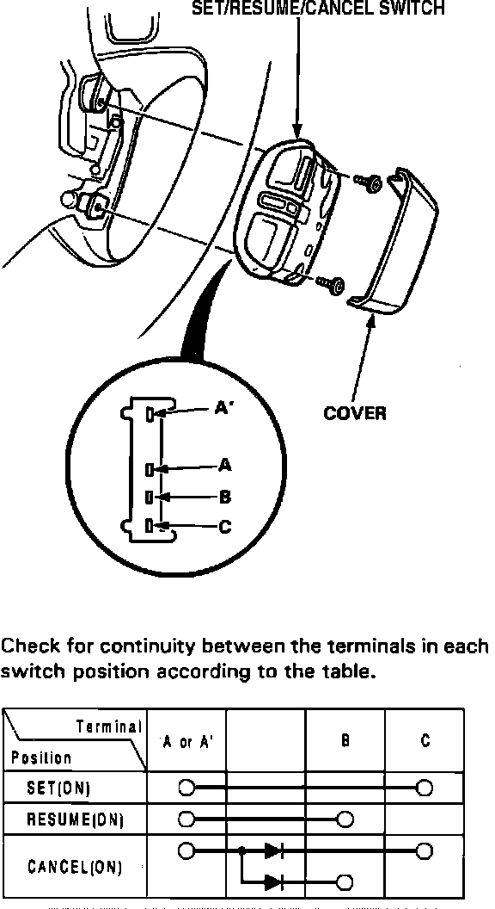

Set/Resume/Cancel Switch
Fig. 1 Supplemental Restraint System Connector:

Fig. 29 Column Harness:

1. To avoid accidental deployment and possible injury, always install protective short connector on inflator connector when harness is disconnected.
2. Remove dashboard lower panel.
3. Remove disconnect cable reel harness and airbag assembly 3-P connector. Connect short connector (red) to airbag connector, Fig. 1.
4. Remove steering column lower cover and disconnect cable reel 6-P connector. Connect SRS test harness C to cable reel connector.
5. Check for continuity between terminals of test harness connector in each switch position as shown in Fig. 29.
6. If there is continuity in each switch position, set/resume/cancel switch is functional. If there is no continuity in one or some switch positions, replace switch.
Fig. 30 Set/resume/cancel Switch:

7. Remove cover from set/resume/cancel switch, then remove two screws and switch from steering wheel. Check for continuity in each switch position as shown in Fig. 30.
8. If there is no continuity in one or some switch positions, replace switch. If there is continuity in each switch position, replace cable reel.